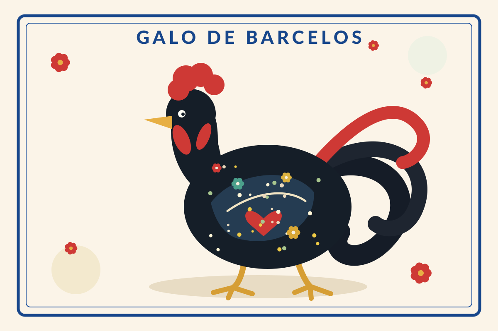
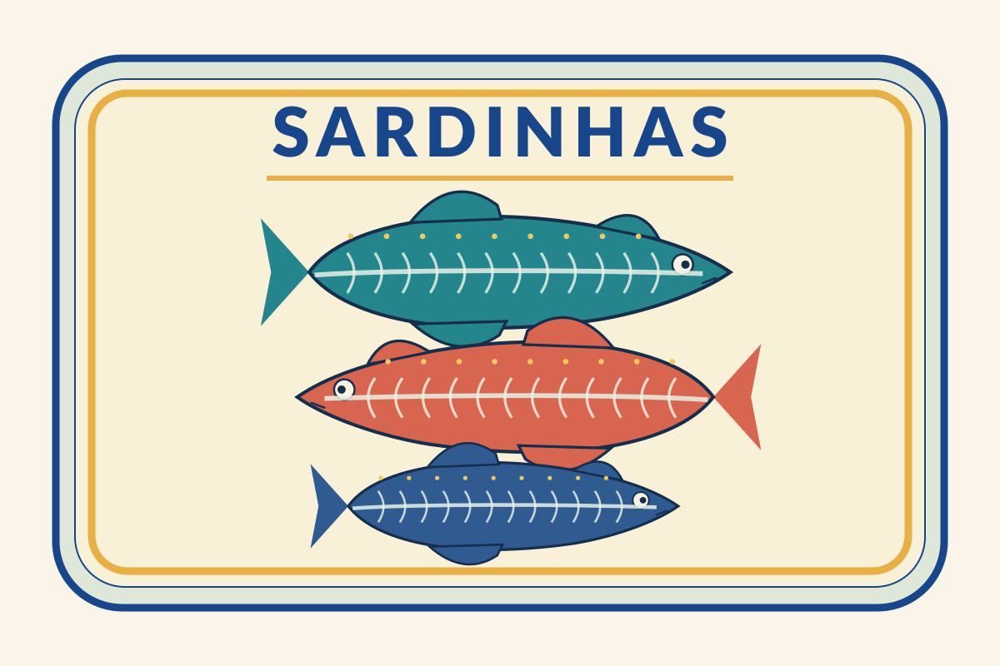
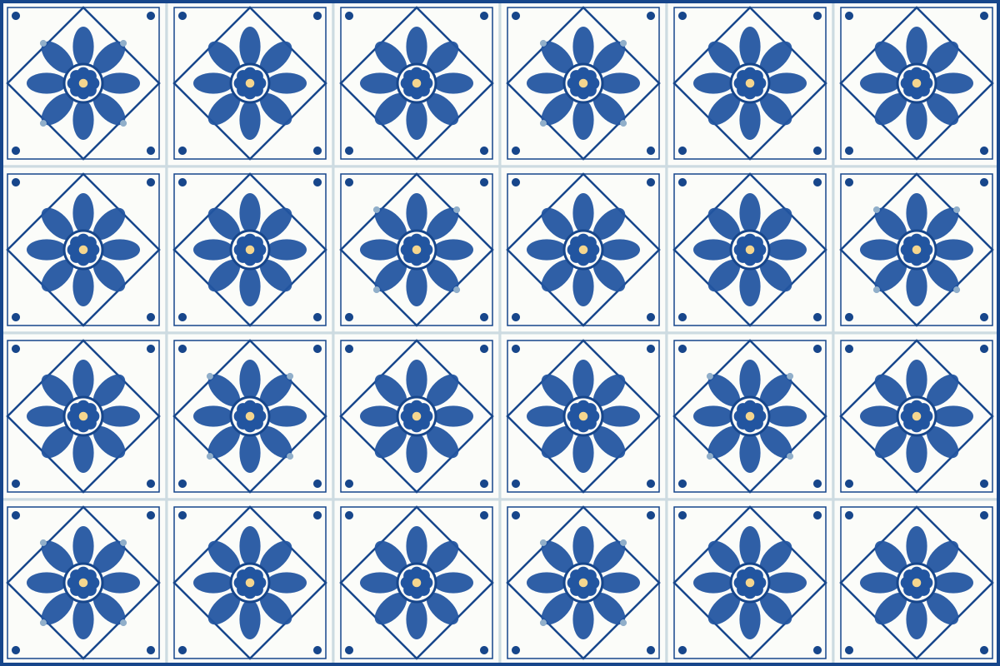
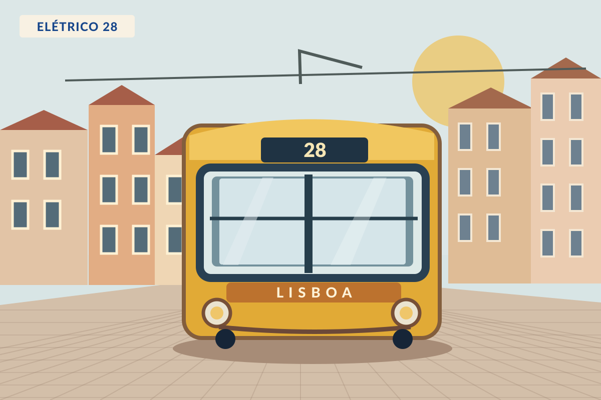
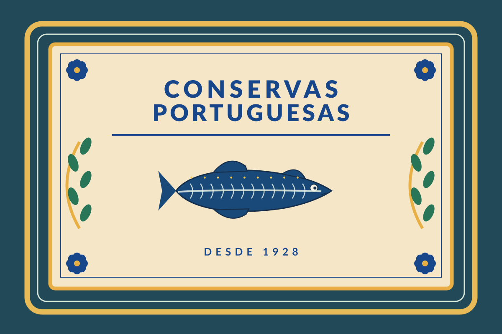
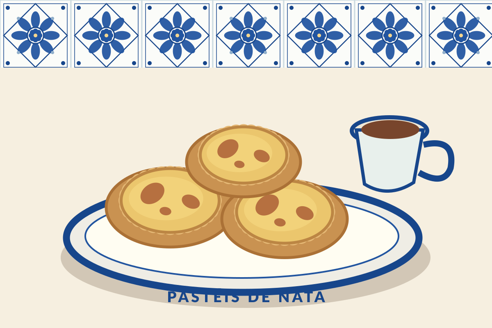

Bem-vindos a Portugal! · Lisboa, 6 de novembro de 2026
One single source of truth, two versions of FHIR, and a converter in between.
Uma só fonte da verdade, duas versões e um tradutor pelo meio.
A tripulação
Brian Postlethwaite · Francisco Novillo Perez · Patrick Werner · Artur Kurvits · Aleksandr Kislitsyn
Press → to start. Boa viagem!
Galo de Barcelos: Di (they-them), Wikimedia Commons, CC BY-SA 4.0

Conservas FHIR · R4 ↔ R6
Packed like sardines: seven chapters in one tin

Desde 2026 · Produto de Lisboa

Every resource is stored as FHIR R4 in PostgreSQL 18. /R4 reads and writes it directly. /R6 runs FHIR Mapping Language (FML) maps over the same rows: R4 → R6 on every read, R6 → R4 on writes for all four resource types.
<type>_history; resource jsonbvendor/fhirpath-lab submodule
Próxima paragem
Three cases, three stops
PatientEncounterBodyStructure
Patient barely changed between R4 and R6, so the generated map is a field-by-field copy. The R6 response has the same content, id and version as the stored R4. Writes work through /R6 too: Patient_6to4 reverses the map, and R6-only fields (contact.role, additionalName, additionalAddress) return 422.
{
"resourceType": "Patient",
"id": "d4ddfc62-…",
"meta": { "versionId": "1", … },
"identifier": [{ "system": "…/mrn",
"value": "MRN-1001" }],
"name": [{ "family": "Doe", "given": ["Jane"] }],
"gender": "female",
"birthDate": "1990-04-01",
"contact": [{
"relationship": [{ "text": "sister" }],
"name": { "family": "Doe", "given": ["Anna"] },
"telecom": [{ "system": "phone",
"value": "+1 555 0100" }]
}]
}
uses ".../4.0/StructureDefinition/Patient" alias PatientR4 as source uses ".../6.0/StructureDefinition/Patient" alias PatientR6 as target imports "http://hl7.org/fhir/uv/xver/StructureMap/*4to6" group Patient(source src : PatientR4, target tgt : PatientR6) extends DomainResource <<type+>> { src.identifier -> tgt.identifier; src.name -> tgt.name; src.gender -> tgt.gender; src.birthDate -> tgt.birthDate; src.contact as s -> tgt.contact as t then PatientContact(s, t); … 11 more one-to-one rules } group PatientContact(source src, target tgt) extends BackboneElement { src.relationship -> tgt.relationship; src.name -> tgt.name; src.telecom -> tgt.telecom; … address, gender, organization, period }
extends DomainResource and the datatype maps (HumanName, ContactPoint, …) come from other files through the wildcard imports, which the embedded engine resolves.
{
"resourceType": "Patient",
"id": "d4ddfc62-…",
"meta": { "versionId": "1", … },
"identifier": [{ "system": "…/mrn",
"value": "MRN-1001" }],
"name": [{ "family": "Doe", "given": ["Jane"] }],
"gender": "female",
"birthDate": "1990-04-01",
"contact": [{
"relationship": [{ "text": "sister" }],
"name": { "family": "Doe", "given": ["Anna"] },
"telecom": [{ "system": "phone",
"value": "+1 555 0100" }]
}]
}
Identical content. R6-only fields (contact.role, contact.additionalName, contact.additionalAddress) are listed in the map as “not populated”.
Responses captured from the running server; meta.lastUpdated and long ids trimmed, key order normalised. The first R6 read took about 2 s while the engine prepared the maps; later reads use the cached program.
An R6 client creates the Encounter. The Encounter_6to4 map turns it into R4 for storage: the R6 class list becomes one R4 Coding plus the cross-version extension, R6 status codes become R4 codes, and four renamed elements get their R4 names back. The server stores it only if converting back to R6 gives exactly what the client sent.
{
"resourceType": "Encounter",
5"status": "completed",
1"class": [
{ "coding": [{ "system": "…/v3-ActCode",
"code": "AMB" }] },
{ "coding": [{ "system": "…/v3-ActCode",
"code": "VR" }] }
],
"subject": { "reference": "Patient/d4dd…" },
"participant": [{
3 "actor": { "reference":
"Practitioner/dr-smith" } }],
2"actualPeriod": { "start": "2026-11-06T09:00:00Z",
"end": "2026-11-06T09:30:00Z" },
4"admission": {
"admitSource": { "text": "Referral" } }
}
5conceptmap "EncounterStatus" { s:"planned" - t:"planned" s:"on-hold" - t:"onleave" s:"completed" - t:"finished" … cancelled, entered-in-error, unknown } group Encounter(source src : EncounterR6, target tgt : EncounterR4) extends DomainResource <<type+>> { 5src.status as v where ($this != 'in-progress') -> tgt.status = translate(v, '#EncounterStatus', 'code'); // R4 class is one Coding: the first class becomes it, // every further class an extension 1src.class first as c then { c.coding first -> tgt.class; }; src.class not_first as v -> tgt.extension as x, x.url = '…/6.0/StructureDefinition/extension-Encounter.class', x.valueCodeableConcept as t then CodeableConcept(v, t); src.subject -> tgt.subject; src.participant as s -> tgt.participant as t then EncounterParticipant(s, t); 2src.actualPeriod -> tgt.period; // renamed 4src.admission as s -> tgt.hospitalization as t then EncounterAdmission(s, t); // renamed } group EncounterParticipant(source src, target tgt) … { 3src.actor -> tgt.individual; // renamed }
The reverse of the generated Encounter_4to6. Status codes follow HL7's R5 → R4 ConceptMap, since R5 and R6 share them. The read map now translates them back: finished reads as completed.
{
"resourceType": "Encounter",
"id": "…",
"meta": { "versionId": "1", … },
5"status": "finished",
1"class": { "system": "…/v3-ActCode",
"code": "AMB" },
1"extension": [{
"url": "…/6.0/StructureDefinition/
extension-Encounter.class",
"valueCodeableConcept": {
"coding": [{ "system": "…/v3-ActCode",
"code": "VR" }] } }],
"subject": { "reference": "Patient/d4dd…" },
"participant": [{
3 "individual": { "reference":
"Practitioner/dr-smith" } }],
2"period": { "start": "2026-11-06T09:00:00Z",
"end": "2026-11-06T09:30:00Z" },
4"hospitalization": {
"admitSource": { "text": "Referral" } }
}
An R4 client reads a normal R4 Encounter: class AMB, plus an extension it can ignore. Search for this row is on the next slide.

The Encounter from the previous slide was sent as R6 with class AMB and VR; R4 stores AMB natively and VR in the cross-version extension. R4 class keeps its standard meaning, because R4 doesn't allow redefining a standard parameter. R6 class sees the whole list. class-r6 gives R4 clients the R6 behaviour under its own name.
GET /R4/SearchParameter/Encounter-class-r6
{
"resourceType": "SearchParameter",
"id": "Encounter-class-r6",
"url": "http://example.org/fhir/SearchParameter/Encounter-class-r6",
"name": "EncounterClassR6",
"derivedFrom": "http://hl7.org/fhir/SearchParameter/Encounter-class",
"status": "draft",
"description": "Backport of the R6 Encounter `class` search to R4. …",
"code": "class-r6",
"base": ["Encounter"],
"type": "token",
"expression": "Encounter.class
| Encounter.extension('http://hl7.org/fhir/6.0/StructureDefinition/
extension-Encounter.class').value",
"multipleOr": false,
"multipleAnd": false
}
fhir/r4/, a small local FHIR package that the canonical manager loads next to hl7.fhir.r4.core. getSearchParametersForResource("Encounter") now returns it with the 22 core parameters.class-r6 at this url, and the server serves the resource, so the link resolves.expression. /R6 runs each hit through Encounter4to6.R6 includedStructure repeats (1..*), but R4 has one location and one morphology. So an R6 BodyStructure is written as one R4 row per structure: <id>, <id>--2, …. R6-only values live in R4 extensions. Both directions use hand-written maps.
{
"resourceType": "BodyStructure",
"active": true,
"description": "Lesion spreading
across the left arm",
"patient": { "reference": "Patient/d4dd…" },
"includedStructure": [
{
"structure": { "coding": [{
"code": "14975008",
"display": "Forearm" }] },
"laterality": { "coding": [{
"code": "419161000",
"display": "Unilateral left" }] },
"morphology": [
{ "text": "Basal cell carcinoma" },
{ "text": "Nevus sebaceus" } ]
},
{
"structure": { "coding": [{
"code": "85050009",
"display": "Bone structure of humerus" }] },
"morphology": [
{ "text": "Lesion" } ]
}
]
}
group BodyStructureSplit(source src : BodyStructureR6,
target bundle : BundleR4) {
src.includedStructure as inc
-> create('BodyStructure') as out,
bundle.entry as e, e.resource = out
then BodyStructureRow(src, inc, out); // 1 row each
}
group BodyStructureRow(source src, source inc,
target out) {
src.description -> out.description; // shared,
src.patient -> out.patient; // every row
inc.structure -> out.location;
inc.morphology first -> out.morphology;
inc.morphology not_first as v
-> out.extension as x,
x.url = '…/extension-BodyStructure
.includedStructure.morphology',
x.valueCodeableConcept as t
then CodeableConcept(v, t);
inc.laterality as v -> out.locationQualifier as q
then MarkLaterality(v, q); // + marker ext
… qualifier, excludedStructure, landmarks,
spatialReference, image, origin → extensions
}
The reverse map, BodyStructure_4to6.fml, merges the rows back: the first row gives the shared fields, and each row adds one includedStructure.
452142f2-…{
"resourceType": "BodyStructure",
"id": "452142f2-…",
"active": true,
"description": "Lesion spreading across the left arm",
"patient": { "reference": "Patient/d4dd…" },
"location": { "coding": [{ "code": "14975008",
"display": "Forearm" }] },
"morphology": { "text": "Basal cell carcinoma" },
"locationQualifier": [{
"coding": [{ "code": "419161000",
"display": "Unilateral left" }],
"extension": [{ "url": "…includedStructure.laterality",
"valueBoolean": true }] }],
"extension": [
{ "url": "…includedStructure.morphology",
"valueCodeableConcept": { "text": "Nevus sebaceus" } },
{ "url": "…/bodystructure-row-group", "extension": [
{ "url": "position", "valuePositiveInt": 1 },
{ "url": "member", "valueReference":
{ "reference": "BodyStructure/452142f2-…--2" } } ] }
]
}
452142f2-…--2{
"resourceType": "BodyStructure",
"id": "452142f2-…--2",
"active": true,
"description": "Lesion spreading across the left arm",
"patient": { "reference": "Patient/d4dd…" },
"location": { "coding": [{ "code": "85050009",
"display": "Bone structure of humerus" }] },
"morphology": { "text": "Lesion" },
"extension": [
{ "url": "…/bodystructure-row-group", "extension": [
{ "url": "primary", "valueReference":
{ "reference": "BodyStructure/452142f2-…" } },
{ "url": "position", "valuePositiveInt": 2 } ] }
]
}
The row-group extension is added by the server (src/fhir/bodystructure.ts), not by FML. It lets an R4 client find the other rows and keeps their order.
An R6 client creates an Observation whose bodyStructure points at the BodyStructure from the previous slide. R6 has one BodyStructure/e7c8…; R4 stores it as three rows. So Observation_6to4 uses resolve() to find all of them and stores one standard bodySite link per row. Reading through R6, Observation_4to6 folds them back into one bodyStructure.
{
"resourceType": "Observation",
"status": "final",
"code": { "text": "Skin temperature" },
"subject": { "reference": "Patient/d4dd…" },
"valueQuantity": { "value": 33.2,
"unit": "Cel" },
"bodySite": { "text": "Left arm" },
"bodyStructure": [{
"reference": {
"reference": "BodyStructure/e7c8…"
} }]
}
201 Created. BodyStructure/e7c8… is one R6 resource with three structures: Forearm, Upper arm, Shoulder.
group ObservationBodySite(source src, target t) {
src.bodySite as s then { s.text -> t.text; … };
src.bodyStructure as bs then {
// the link R6 gave: the primary row
bs.reference as r -> t.extension as x,
x.url = '…/StructureDefinition/bodySite',
x.valueReference as v then Reference(r, v);
// resolve() the BodyStructure: its primary R4
// row lists the other rows as members
bs.reference as r
where (reference.startsWith('BodyStructure/'))
-> evaluate(r, resolve() as BodyStructure) as row
then BodyStructureRows(row, t);
};
}
group BodyStructureRows(source row : BodyStructure,
target t) {
row.extension as g where (url = '…/bodystructure-row-group') then {
g.extension as m where (url = 'member') then {
m.value : Reference as member
-> t.extension as x,
x.url = '…/StructureDefinition/bodySite',
x.valueReference as v then Reference(member, v);
};
};
}
resolve() is answered by the server from the stored R4 rows; it never goes to the network. A reference that doesn't resolve keeps its single link.
{
"resourceType": "Observation",
"id": "7ddf…",
"meta": { "versionId": "1" },
"status": "final",
"code": { "text": "Skin temperature" },
"subject": { "reference": "Patient/d4dd…" },
"valueQuantity": { "value": 33.2,
"unit": "Cel" },
"bodySite": {
"text": "Left arm",
"extension": [
{ "url": "…/StructureDefinition/bodySite",
"valueReference": {
"reference": "BodyStructure/e7c8…" } },
{ "url": "…/StructureDefinition/bodySite",
"valueReference": {
"reference": "BodyStructure/e7c8…--2" } },
{ "url": "…/StructureDefinition/bodySite",
"valueReference": {
"reference": "BodyStructure/e7c8…--3" } }
]
}
}
One link per R4 row: Forearm, Upper arm, Shoulder. An R4 client that follows them gets every structure the R6 client meant, not just the first row.
src.bodySite as b then {
b.extension as e
where (url = 'http://hl7.org/fhir/StructureDefinition/bodySite') then {
e.value : Reference as r
-> tgt.bodyStructure as cr, cr.reference as t
then BodySiteReference(r, t);
};
};
// A row reference becomes a resource reference: BodyStructure/x--2 → BodyStructure/x
group BodySiteReference(source src : ReferenceR4, target tgt : ReferenceR6) extends Element {
src.reference as r -> tgt.reference =
(r.replaceMatches('^(BodyStructure/[^/]+)--[0-9]+$', '$1'));
}
{
"resourceType": "Observation",
"id": "7ddf…",
"meta": { "versionId": "1" },
"status": "final",
"code": { "text": "Skin temperature" },
"subject": { "reference": "Patient/d4dd…" },
"valueQuantity": { "value": 33.2, "unit": "Cel" },
"bodySite": { "text": "Left arm" },
"bodyStructure": [{
"reference": { "reference": "BodyStructure/e7c8…" } }]
}
Exactly what the client sent, plus id and meta: the three row links fold into one bodyStructure. The server checks this before it stores: a write whose round trip loses anything is refused. For example, bodyStructure.concept has no R4 place and returns 422 “Not supported across FHIR versions yet: Observation.bodyStructure”.
PUT /R4/Observation/7ddf… bodySite → BodyStructure/e7c8…--2 200 PUT /R6/Observation/7ddf… status → amended 200 // stored afterwards, version 3 "status": "amended", "bodySite": { "text": "Left arm", "extension": [{ "url": "…/StructureDefinition/bodySite", "valueReference": { "reference": "BodyStructure/e7c8…--2" } }] }
The R6 client only sees BodyStructure/e7c8…, so its PUT would widen the reference back to the whole resource. The server keeps the stored row reference while the R6 body still points at the same BodyStructure (keepRowReferences).
bodySite or the procedure extensions, and need the same map, checks and repointing.
It's not a tooling problem.
It's a modelling exercise.
resolve() result) are small fixes, not blockers.class, Observation statusReason).class keeps its meaning, so class-r6 is a separate parameter.Each of these is a convention to agree on, ideally with the HL7 cross-version work, not a library to write.
Obrigado!
Perguntas? Há café e pastéis de nata. Questions? There's coffee and custard tarts.